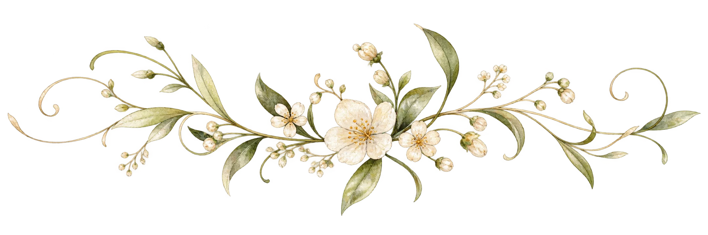
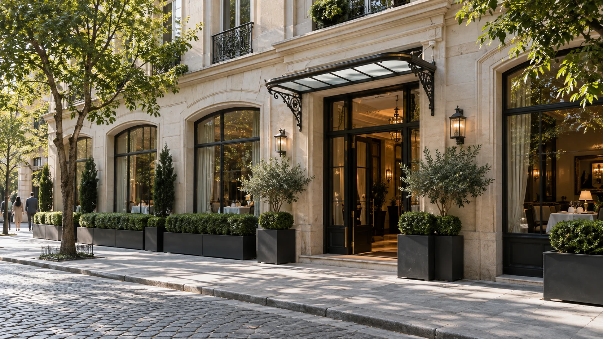
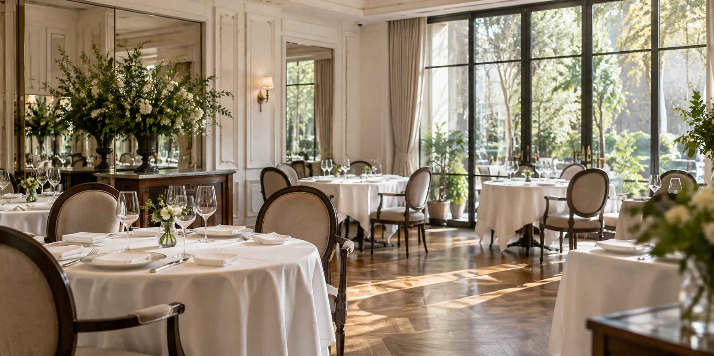

About
L'ORNEVIERについて
料理とともに生まれる、大切なひとときのために。

Our Philosophy
食事は、大切なひとときの
記憶となる
料理の味わいだけでなく、席をともにした方との会話や、窓から差し込む光、その日の空気まで。食卓を囲む時間のすべてが、かけがえのない記憶になると私たちは考えています。
L'ORNEVIERは、一皿ごとの丁寧な仕事を通して、心に長く残る幸福な時間をお届けします。

Our Story
一席一席に向き合う歩み
私たちが大切にしてきたのは、流行や形式にとらわれることなく、目の前のお客様と食材に誠実であることです。
完全予約制の静かな時間のなかで、その日のための料理と心地よいサービスを積み重ねています。

Cuisine & Space
料理と空間が調和する時間
季節の食材が持つ香り、色彩、食感を生かした料理と、穏やかな光に包まれるダイニング。互いが静かに引き立て合うよう整えています。
コースメニューを見る